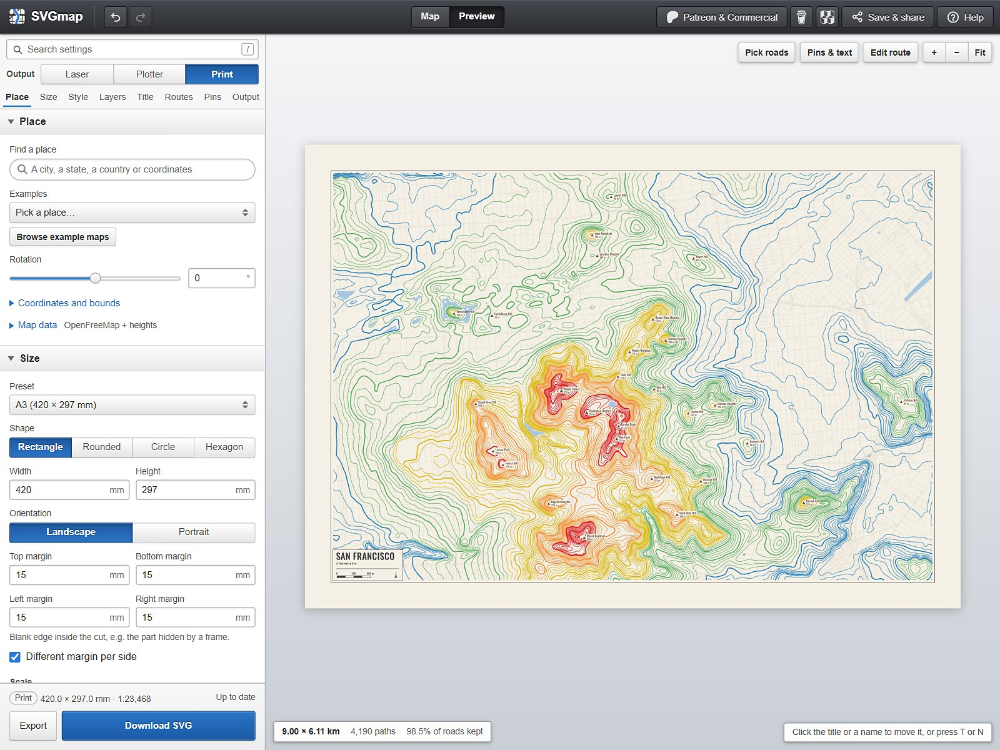

San Francisco with an elevation line every 5 m, in the Print preview.
Map data © OpenStreetMap contributors and Overture Maps, elevation from Mapterhorn.
About
SVGmap makes SVG maps of any city, state, or country from OpenStreetMap data, for laser engraving, pen plotters, and print. Everything runs in the browser.
Search for a place, then drag the frame on the map to set the area and the size of the piece. Pieces can be rectangles, circles, hexagons, or cut along the outline of a state or country. Layers, colors, titles, names, pins, and GPX routes are set in the sidebar, and the preview shows the SVG as it will be exported.
Output for Each Machine
- Laser: every layer gets its own color, so engraving, scoring, and cutting can each get their own process.
- Plotter: filled areas are hatched, each pen is on its own layer, and strokes are ordered to cut down pen-up travel.
- Print: color themes, place names, and elevation lines.
Background
SVGmap replaces laserSVG, my earlier Blender add-on for laser engraving maps. The map at the top of the main page is a Print export of Cincinnati with the Classic and Midnight themes.